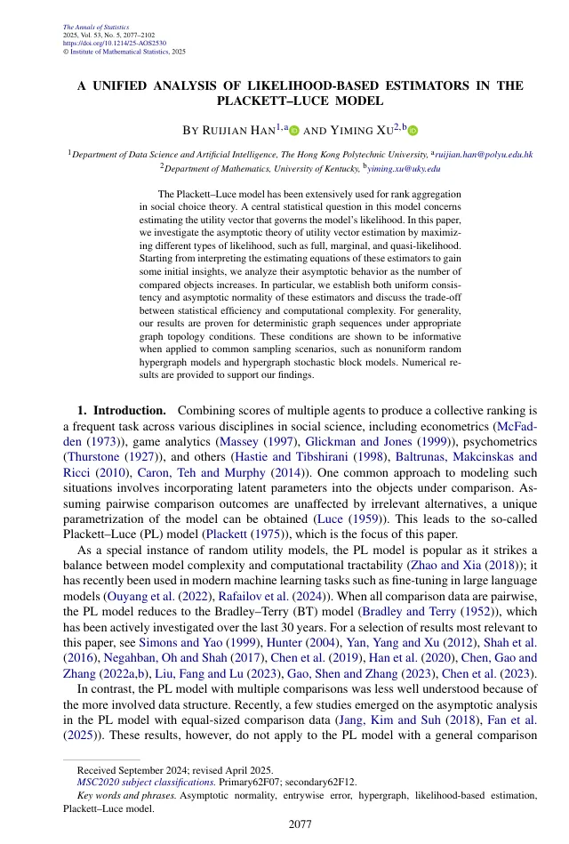
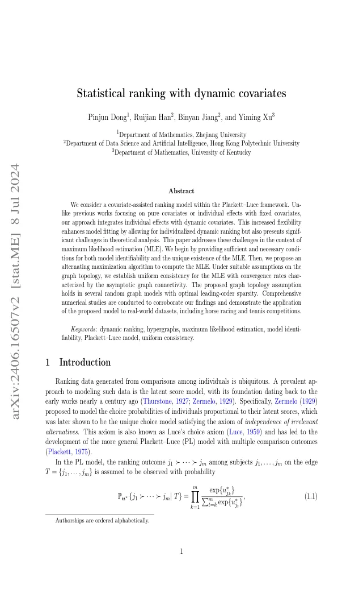
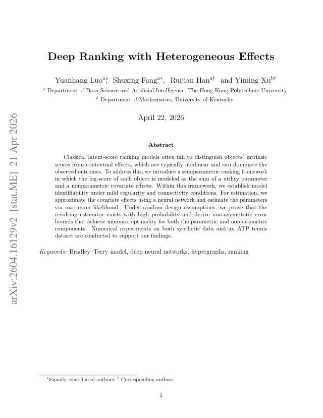
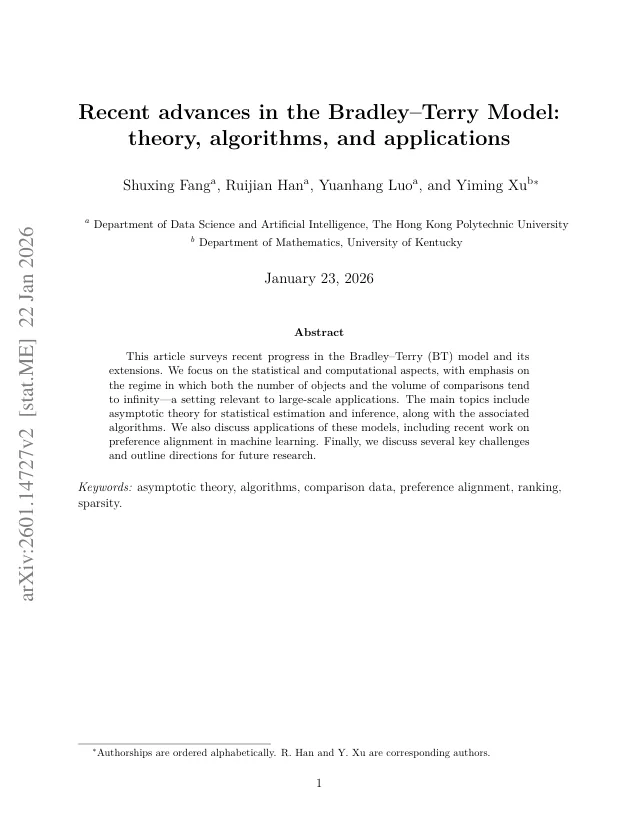
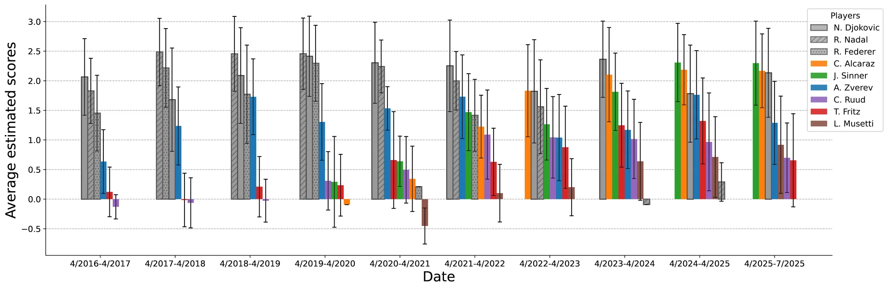

Research
Ranking science, peer reviewed.
The Hypergraph engine is built on published statistical methodology — from Plackett–Luce asymptotics to deep semiparametric ranking models.
Publications
Selected papers.

A unified analysis of likelihood-based estimators in the Plackett–Luce model
The Annals of Statistics 53(5), 2025
projecteuclid.org →
Statistical ranking with dynamic covariates
JRSS Series B 88(1), 221–238, 2026
academic.oup.com →
Deep ranking with heterogeneous effects
arXiv:2604.16129, 2026
arxiv.org →
Recent advances in the Bradley–Terry model: theory, algorithms, and applications
arXiv:2601.14727, 2026
arxiv.org →ATP demo study
21,385 matches, 389 players, and a held-out 2024-2025 test window. The demo highlights probability calibration and ranking performance without disclosing proprietary implementation details.
